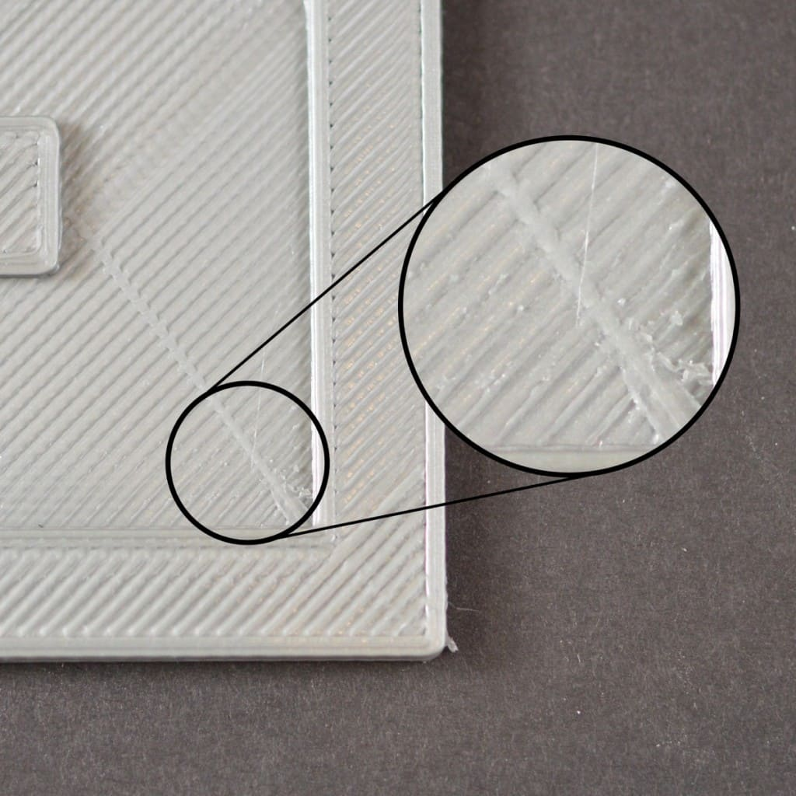

Sin extrusion la primer capa
- No se purgo el extrusor al inicio
- Nozzle rozando la cama
- El filamento esta 'robado'
- El nozzle está tapado
No se pega a la cama

- Plataforma no nivelada
- Nozzle demaciado lejos de la cama
- Primera capa demaciádo rapida
- Problemas con la temperatura o fan de capa encendido
- La superficie de la cama de impresion
- Cuando todo falle: Brims y Rafts
Extrusion insuficiente
- Diametro extrusor/filamento seteado incorrecto
- Incrementar el extrusion multiplier
- Clogged/tapado
- Velocidad muy alta
Sobre extrusion

- Diametro extrusor/filamento seteado incorrecto
- Disminuir el extrusion multiplier
Huecos en la capa superior

- Capas superiores insuficientes
- El relleno es demaciado bajo
- Problemas de poca extrusion
Stringing/Oozing/hilos
- Distancia de retraccion
- Velocidad de retraccion
- Temperatura alta
- Grandes movimientos en espacio abierto
- Velocidad de 'viaje'
Sobrecalentamiento
- Enfriamiento insuficiente
- Imprimiendo a muy alta temperatura
- Imprimiendo demaciado rapido
- Reduccion de velocidad en capas pequeñas
- Cuando todo falle: intentar imprimir varias piezas simultáneamente
Layer shifting
- demaciada velocidad de travel
- pieza/overhangs complicados
- Problemas mecanicos y/o electricos
Se separan las capas / Splitting
- Altura de capa demaciado alta.
- Temperatura demaciado baja.
- problemas con el ambiente con determinados materiales.
Barral/nozzle desajustados
- Ajustar apropiadamente nozzle contra el Barral
- Sin ajustar el nozzle contra el block
Filamento comido
- Velocidad de retracción muy alta.
- Temperatura del extrusor muy baja
- Imprimiendo demaciado rapido
- Chequear extrusor parcialmente/tapado.
- Tension del resorte del extrusor.
Extrusor tapado
- Empujar manualmente el filamento al extrusor
- Sacar el filamento, cortar un tramo y reinsertar.
- Limpiar el nozzle.
Deja de extruir en el medio de la impresion
- Sin filamento
- Filamento ‘robado’
- Nozzle tapado
- Driver del motor sobrecalentado.
Relleno débil
- Probar con otros patrones de relleno
- Bajar la velocidad de infill
- Incrementar el ancho del trazo del infill
Blobs o sobreextrusion al inicio de la capa
- Retraccion y coasting incorrectos
- Evitar retracciones innecesarias
- Retracciones en movimiento
- Elegir el inicio de la ‘costura’
Gaps o agujero entre relleno y perímetro
- Insuficiente overlap
- Imprimiendo demaciado rapido
Curling o bordes deformados
- Overheating / temperatura muy alta
- Poca refrigeracion / fan de capa
cicatrices en la capa superior

- Flowrate elevado
- Vertical lift (Z-hop)
Agujeros en las esquinas
- Perimetros insuficientes
- Capas superiores insuficientes
- Relleno insuficiente
- Velocidad alta
Lineas en los costados

- extrusion inconsistente
- Variaciones de temperatura
- Problemas mecanicos (wobble)
Vibraciones o 'ringing'
- Imprimiendo demaciado rapido
- Aceleraciones del firmware mal seteadas
- Problemas mecanicos
Agujeros en paredes finas
- Ajustar el ancho del trazo del extrusor
- Opciones de overlap en huecos donde no entra un perimetro.
Cosas pequeñas no se imprimen
- Habilitar extrusion de perimetros simples
- Rediseñar la pieza para tener anchos minimos
- Cambiar el nozzle por uno mas pequeño
- cambiar el layer width
Extrusion inconsistente
- El filamento se esta trabando o frenando
- Extrusor tapado
- alturas de capa muy muy finas
- Ancho de extrusion incorrecto
- Mala calidad del filamento
- Problemas mecanicos del extrusor
Warping
- Usar cama caliente o subirle la temperatura.
- Apagar el fan de capa en las primeras capas
- Contener la temperatura ambiente de la impresora
- Calibrar bien la cama y usar 'roby'
- Brims y Rafts
Mala superficie de soportes
- Bajar la altura de capas
- Subir el infill del soporte
- Separacion vertical del soporte
- Separacion horizontal del soporte
- activar interfaz de soporte
- Usar un segundo extrusor/material. (PVA)
Precision dimensional
- Pata de elefante
- Under-extrusion o sobreextrusion
- Steps/mm erróneos
- Corregir con expansion horizontal
Malos puentes
- Aumentar velocidades de bridge y reducir flujo en bridges
- Chequear el angulo usado en el infill del bridge
- Usar algunos soportes en bridges muy largos